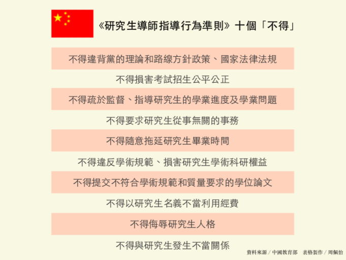

Search
About
us

碩博師生不睦致憾事 中國訂十「不得」互動準則
2020/12/03
文| 周佩怡


近年中國研究生與導師關係不佳而自殺的事件頻傳。中國教育部11日為此頒布包含十個「不得」的《研究生導師指導行為準則》，明確規定導師行為，盼解決目前師生關係不睦的問題。多數民眾對此表示贊成，但也點出舉報方式、確切罰則不明的缺漏。
中國教育部新聞稿提到，「導師是研究生培養的第一負責人」，本應為國家作育人才，卻有部分導師未善盡職責，導致研究生壓力過大而自殺。
準則針對導師行為，從正確履行指導職責、精心盡力投入指導、嚴格遵守學術規範等八個面向，提出「不得對研究生的學業進程及面臨的學業問題疏於監督和指導」、「不得要求研究生從事與學業、科研、社會服務無關的事務」、「不得違規隨意拖延研究生畢業時間」、「不得侮辱研究生人格」等十個「不得」。中國教育部新聞稿提到，「導師是研究生培養的第一負責人」，本應為國家作育人才，卻有部分導師未善盡職責，導致研究生壓力過大而自殺。
根據《香港01》報導，一名大連理工大學研究生於10月13日自縊身亡。他在遺書中提到老師上課品質極差，論文進度停滯不前，老師又鮮少關心自己，不但使研究生涯空轉，也讓他面臨身心壓力。無獨有偶，5月9日中國傳媒大學動畫與數字藝術學院碩士生黃靜怡墜樓身亡，家屬發文指控其導師百般刁難、不同意送審畢業論文。即使黃靜怡苦苦哀求仍不理不睬，造成他精神逐漸崩潰，出現幻覺、幻聽，最終發生悲劇。另一起研究生自殺事件發生於2019年聖誕節，南京郵電大學材料科學與工程學院張姓研究生長期被導師謾罵壓榨、羞辱人格，導致重度憂鬱。事發當日，導師拒絕批改論文，並強逼他簽署延期畢業承諾書，甚至要求賠償不合理的實驗費用，致使該生選擇在實驗室以一把火結束自己年輕的生命。而類似事件還有許多⋯⋯。
老師作為與學生相處的第一線，除了肩負教學、研究的職責，更須與學生建立良好的師生關係。 圖／周佩怡攝
相較上述案例遭受的待遇，中國政法大學研究生張大強（化名）自認很幸運，他的導師時常關心學生的學習與生活，每個月的導生聚更會邀請學長姐分享經驗，師生關係和睦，相處融洽。北京大學教育學院院長閻鳳橋以自身經驗分享，他除了與研究生建立良好的溝通管道，也會主動關切他們的身心狀況和學業。他表示自己鮮少與學生發生嚴重摩擦，至多曾因研究生論文進度不佳而顯得急躁，但事後自我檢討道：「我們都是從年輕走過來的，自己當時不也存在著類似的問題嗎？」
中國近年頻傳學生因師生關係不睦而自殺的新聞，顯示師生關係也是學生就學期間重視的元素。圖為示意圖。 圖／周佩怡攝
違反準則的導師，中國教育部將依據《教育部關於高校教師師德失范行為處理的指導意見》等相關規定，約談、限制招生名額、停止招生資格、取消導師資格，同時亦將問責院系所乃至整個學校。中國政法大學研究生凌小莉（化名）認為準則內容過於概括，沒有明確的判斷標準，可能讓不良導師有可趁之機。他也指出目前準則只是效力層級較低的部門文件，建議進一步立法。閻鳳橋則表示教育部制定的是原則性準則，僅能提供大方向，但大學都有相應的申訴管道及管理細則。他也補充，準則的頒布代表確實存在有問題的師生關係，期盼藉此改善研究所師生關係，形成有利學生成長和發展的環境。